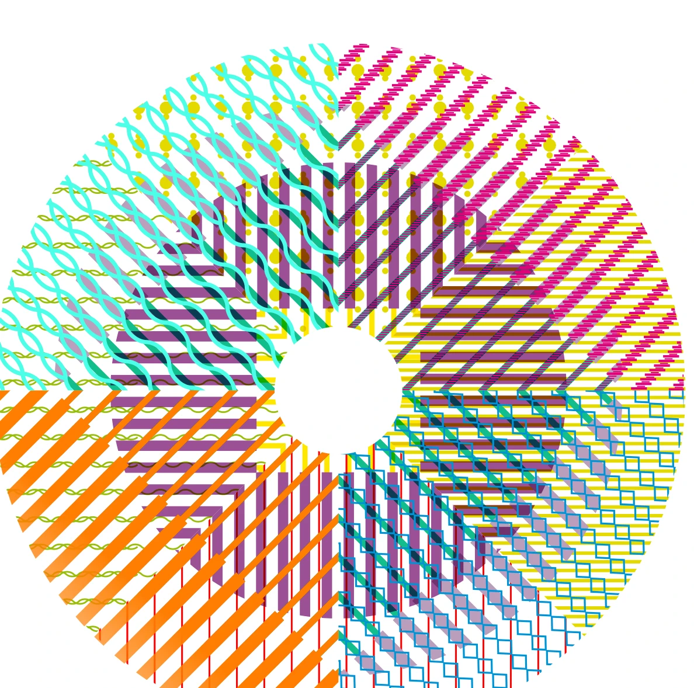
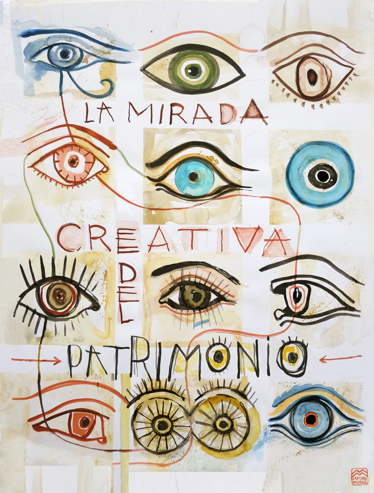

Visibilizar
Reconocer las iniciativas y las personas que cuidan el patrimonio cultural.
Una red para encontrarnos, compartir experiencias y dar voz a quienes cuidan, transforman y mantienen vivo el patrimonio cultural desde sus comunidades.

Patrimonio que conecta.Una red de personas.Consulta las iniciativas recogidas en los Encuentros Patrimonio de Proximidad. Explora el catálogo por provincia, edición y temática, y accede a la ficha de cada experiencia.
Explora las localidades de las iniciativas. Si varios proyectos comparten municipio aparecen juntos en el mismo marcador; pulsa para acceder a sus fichas.
El mapa se cargará cuando pulses «Explorar mapa».
Precisión: los puntos representan el centro aproximado de los municipios recogidos en el inventario, no las instalaciones ni direcciones exactas de cada experiencia. Los marcadores deben validarse antes de la publicación institucional. Cartografía © OpenStreetMap.
El patrimonio no se conserva solo. Lo sostienen las personas que lo conocen, lo sienten y lo transmiten.
Redactívate es un espacio de encuentro impulsado por el Instituto Andaluz del Patrimonio Histórico (IAPH) para dar visibilidad a iniciativas de activación patrimonial, reconocer a sus comunidades y conectar experiencias desde el territorio, especialmente en Andalucía.
Los encuentros promueven el diálogo entre colectivos, profesionales, centros educativos, administraciones y ciudadanía, inspirándose en el concepto de comunidad patrimonial de la Convención de Faro.
Conoce el proyecto en la web oficialReconocer las iniciativas y las personas que cuidan el patrimonio cultural.
Crear vínculos y redes de colaboración entre comunidades y territorios.
Intercambiar buenas prácticas, conocimientos y modelos de gestión.
Impulsar la participación, la inclusión y la salvaguarda del patrimonio.
El patrimonio no es solo lo que heredamos. Es también lo que construimos en comunidad.
UNA IDEA QUE ATRAVIESA REDACTÍVATEDe las primeras experiencias de activación local a los debates sobre cuidados, educación, creatividad e innovación.
Una mirada a cómo las ideas, la creatividad y la innovación conectan comunidades y aportan soluciones desde el patrimonio.
Fechas, enfoques y documentos contrastados con los programas publicados por el IAPH. La periodicidad de los encuentros ha variado: los años mostrados son las ediciones celebradas, no una programación futura.
El IV Encuentro abordó cómo transformar ideas creativas en acciones con impacto real en las comunidades, poniendo en diálogo derechos culturales, educación, memoria, participación y nuevas formas de narrar el patrimonio.
Ver programa completoPrograma resumido. Consulta el PDF para los horarios detallados, intervenciones y participantes. Ver una sesión grabada de 2025 ↗

ILUSTRACIÓN: LA MARI MURIEL · RELATORÍA 2025Los encuentros no terminan cuando se cierran sus sesiones. Sus relatorías recogen conexiones, reflexiones, prácticas creativas y los aprendizajes compartidos por las comunidades participantes.
La relatoría del IV Encuentro de 2025 reúne las voces del encuentro en torno a la creatividad, la cooperación, la memoria colectiva, los cuidados y el territorio.
Descubre la relatoría de 2025Programas, convocatorias, relatorías y archivos para profundizar en Redactívate y sus ediciones.
Sesiones, mesas y proyectos participantes de los dos días.
Abrir documento ↗02 / CONVOCATORIA HISTÓRICARequisitos, líneas temáticas y criterios de selección de aquella edición.
Consultar documento ↗03 / RELATORÍAUna lectura creativa y colectiva de las jornadas de 2025.
Leer relatoría ↗04 / ARCHIVO DEL IAPHDocumentación y materiales de distintas ediciones de Redactívate.
Explorar repositorio ↗¿Quieres conocer más sobre Redactívate o entrar en contacto con el proyecto? Ponte en comunicación con el equipo del IAPH.
Escribir al equipoSevilla · Andalucía